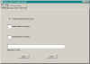
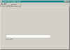
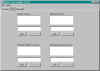
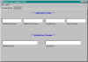

Tymeac User Variables
The purpose of this Class is a replacement for the variables section of the Tymeac Configuration File. These variables load at Tymeac start up.
We ship this Class filled in for the Demonstration System.

Since maintaining this class by hand can result in errors, we provide a GUI with which you may maintain this class. This is a binary "use the GUI or do it by hand". If you use the GUI, then you should not try to edit the resulting java file. The GUI is very simple -- it reads a java file without comments or formatting.
In either case, once you create the TymeacUserVariables.java file, you must compile it into the com/tymeac/serveruser directory.
The GUI class is com.tymeac.jframe.TyUserVariables.




(Click for full image)
{kind=link}
{kind=link}
{kind=link}
{kind=link}
It require access to the java file, TymeacUserVariables.java. You may not substitute another file name in the dialog box.
The editing for the fields is the same as the Configuration GUI, TyCfg.
The rest of this document explains the java file format.
Instance Fields
General Pane
String notify -- The name of the user-maintained Notification Class.
The three below are alterable at runtime with the Alter Server Options GUI
Int sys_exit -- End the java virtual machine when Tymeac shuts down.
Int mon_interval -- The Tymeac Monitor interval.
Int Inactivate Minutes -- The Inactivation System, inactivate time.
Security Pane
* --- Optional ---*
String login context -- When using a security start up.
Exits Pane
* --- Optional Start Up and Shut Down User Exit Strings ---*
When the array is null, Tymeac ignores the field For names with URL's, see the naming and URL document.
// Start up user exit classes
private String[] startup_classes = null;// Start up Functions
private String[] startup_functions = null;// Shut down user exit, stage one classes
private String[] shutdown_stage1_classes = null;// Shut down user exit, stage two classes
private String[] shutdown_stage2_classes = null;Alternates Pane
* --- Optional Alternate Log and Statistics files ---*
Both logging and statistics are optional.
When the use_log or use_stats boolean is false, Tymeac ignores the option.
When the filename is null, Tymeac ignores the File option.
When the filename is not null and the dir is null, Tymeac uses the current directory.
When the filename is null, Tymeac checks for the Alternate Class option.
What this means:
If logging is desirable than both the use_log must be true and either the log_file or the alt_log_class must be a String value.
When using a file, if log_dir is null, Tymeac puts the file in the current directory otherwise Tymeac puts the file in the directory specified by log_dir. Tymeac opens the file with "append".
The same is true for the statistics repository.
private boolean use_log = false;
private String log_dir = null;
private String log_file = null;
private String alt_log_class = null: new in release 3.0.1
For names with URL's, see the naming and URL document.private boolean use_stats = false;
private String stats_dir = null;
private String stats_file = null;
private String alt_stats_class = null: new in release 3.0.1
For names with URL's, see the naming and URL document.
Instance Methods
Constructor -- This is where you set the values for the above instance variables.
public int getMonInterval -- Accessor. Returns the value of the instance field, mon_interval.
public int getSysExit -- Accessor. Returns the value of the instance field, sys_exit.
public int getNotify -- Accessor. Returns the value of the instance field, notify.
public int getLoginContext -- Accessor. Returns the value of the instance field, login_context.
public String getLogDir() -- Accessor. Returns the value of the instance field, log_dir.
public String getLogFile() -- Accessor. Returns the value of the instance field, log_file.
public String getLogAlt() -- Accessor. Returns the value of the instance field, alt_log_class. new in release 3.0.1
public boolean getLogUse() -- Accessor. Returns the value of the instance field, use_log.
public String getStatsDir() -- Accessor. Returns the value of the instance field, stats_dir.
public String getStatsFile() -- Accessor. Returns the value of the instance field, stats_file.
public String getStatsAlt() -- Accessor. Returns the value of the instance field, alt_stats_class. new in release 3.0.1
public boolean getStatsUse() -- Accessor. Returns the value of the instance field, use_stats.
public String[] getStartupClasses() -- Accessor. Returns the value of the instance field, startup_classes.
public String[] getStartUpFunctions() -- Accessor. Returns the value of the instance field, startup_functions.
public String[] getShut1Classes() -- Accessor. Returns the value of the instance field, shutdown_stage1_classes.
public String[] getShut2Classes() -- Accessor. Returns the value of the instance field, shutdown_stage2_classes.